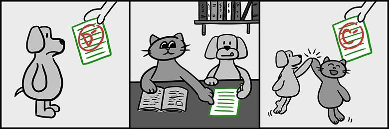
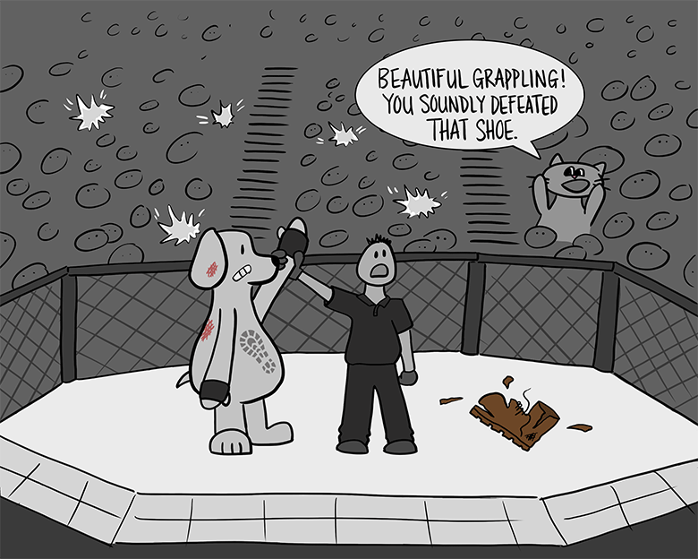

Code Review по-человечески
О чём сегодня поговорим?
- Задачи Code Review:
- Почему делаем Code Review:
- C чего начинать Code Review:
- Техники
- Проблемы и о чем нужно помнить:
Задачи Code Review:
- улучшение качества кода и поиск лучших решений
Задачи Code Review:
- улучшение качества кода и поиск лучших решений
- повышение квалификации разработчиков
Задачи Code Review:
- Улучшение качества кода и поиск лучших решений
- Повышение квалификации разработчиков
- Передача знаний и изучение работы коллег для группового владения кодом
Задачи Code Review:
- Улучшение качества кода и поиск лучших решений
- Повышение квалификации разработчиков
- Передача знаний и изучение работы коллег для группового владения кодом
- Поиск лучших решений
Почему делаем Code Review:
Почему делаем Code Review:
Почему делаем Code Review:
- Замыленный глаз
- Взаимозаменяемость
Почему делаем Code Review:
- Замыленный глаз
- Что, если разработчика переедет автобус?
- Команда эффективнее разработчиков-одиночек
С чего начинать?
- с более высокого уровня
- затем опускайтесь на уровень ниже
С чего начинать?
- с более высокого уровня
- затем опускайтесь на уровень ниже
Стиль кода
- автоматизировать процесс: Prettier, ESLint, Editorconfig, git hooks
- руководство по стилю
Щедро используйте примеры кода
Оформляйте отзывы как запросы, а не команды
Обосновывайте принципами, а не мнениями
Техники
- Стремитесь повысить уровень качества кода только на одну-две ступени

Техники
- Стремитесь повысить уровень качества кода только на одну-две ступени
- Ограничьте фидбек по повторяющимся примерам
Техники
- Стремитесь повысить уровень качества кода только на одну-две ступени
- Ограничьте фидбек по повторяющимся примерам
- Искренне хвалите

Техники
- Стремитесь повысить уровень качества кода только на одну-две ступени
- Ограничьте фидбек по повторяющимся примерам
- Искренне хвалите
- Утверждайте ревью, когда остались тривиальные правки
Техники
- Стремитесь повысить уровень качества кода только на одну-две ступени
- Ограничьте фидбек по повторяющимся примерам
- Искренне хвалите
- Утверждайте ревью, когда остались тривиальные правки
- Заранее избегайте тупиковых ситуаций
Проблемы и о чем нужно помнить:
- Code Review занимает время
- Раздражает
- Сведение счетов
- Доказать кто круче
- Просто странный код без всяких комментариев и цели ревью
Проблемы и о чем нужно помнить:
- Почему меня просят про Code Review?
- Дополнительные вводные и комментарии
- Понятность отзыва от ревьюера
- Не пишем: это что-то странное тут...
- Не пишем повестей на много страниц
Проблемы и о чем нужно помнить:
- Что бывает, когда много изменний в одном PR
- Что бывает, когда мало изменний в одном PR
- Почему лучше сначала планировать разработку
- Избегайте новых коммитов во время PR
- Отвечайте на вопросы